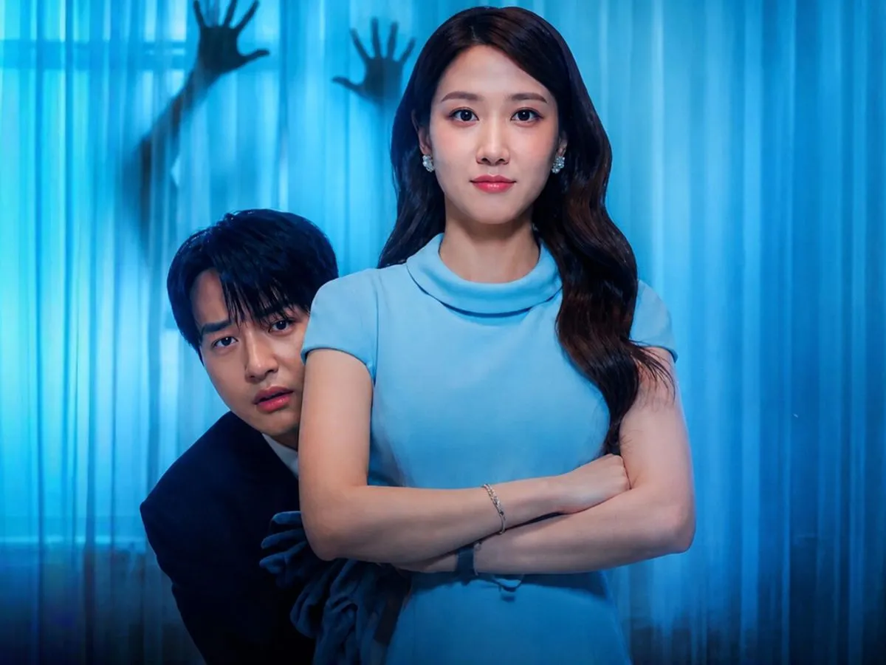

Por que você precisa conhecer os doramas?
Aqui os motivos
- Histórias e personagens inesquecíveis: Enredos envolventes que te fazem rir, chorar e refletir sobre a vida de um jeito leve e profundo.
- Personagens Marcantes: Conexões reais sobre amizade, superação, respeito e amores que realmente aquecem o coração.
- Imersão Cultural: Uma viagem fascinante pela cultura, culinária e costumes asiáticos sem sair de casa.
- Sem Espaço para o Tédio: Do suspense de tirar o fôlego até a comédia romântica mais fofa, existe um dorama para cada momento.
- O Aviso Amigo: Falo por experiência própria... depois que você dá o primeiro play, não tem mais volta! 🍿✨
Vem conferir mais doramas que garanto que vai gostar!

Assustadoramente apaixonado
Curtidas: 0